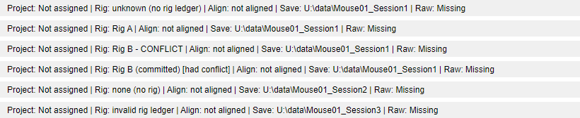
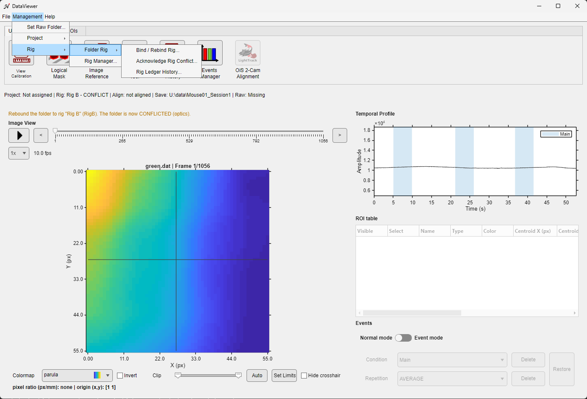
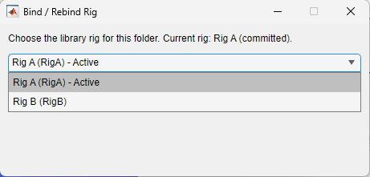
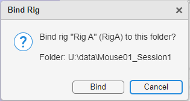
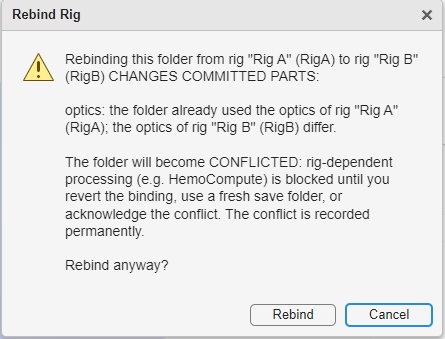
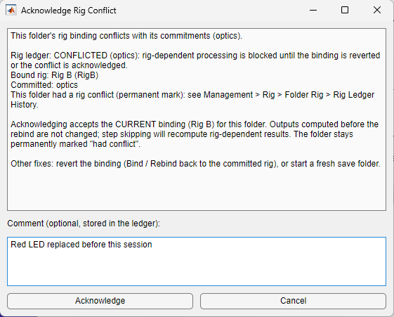
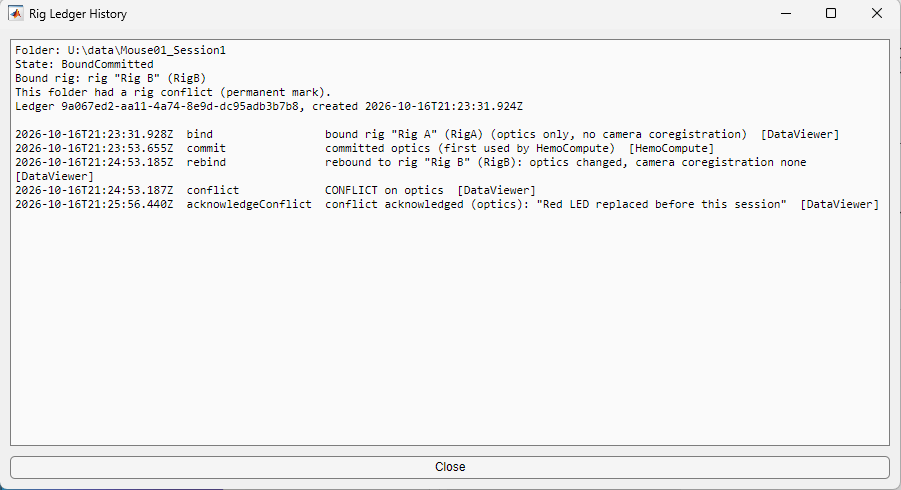
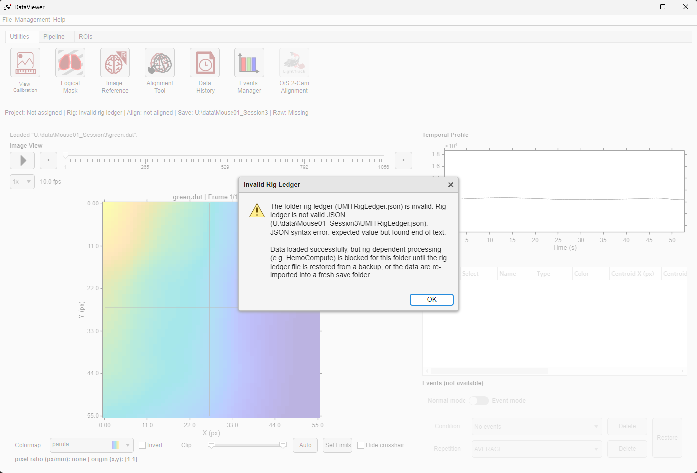

This page is for users of rig-dependent processing, for example hemoglobin computation with HemoCompute. Viewing data, ROIs and most processing do not depend on the rig.
Every Save Folder keeps its own record of the rig its data came from: the folder rig ledger (UMITRigLedger.json, see Save Folder metadata files). It is the single source of rig information for that folder. The rig library of your computer is used only to author rigs and to choose one; analysis functions such as HemoCompute read the optics from the folder ledger, never from the library. Opening data in DataViewer never writes to the folder.

| Text | Meaning |
|---|---|
| unknown (no rig ledger) | The folder has no rig ledger, for example data imported by an earlier release. Bind a rig before rig-dependent processing. |
| none (no rig) | The folder was imported without a rig (single-camera data, TIFF import, or dual-camera data imported without coregistration). Bind a rig before rig-dependent processing. |
| the rig name, for example Rig A | The folder is bound to that rig, and no rig-dependent result has used it yet. The rig can be changed freely. |
| (committed) after the name | A rig-dependent step (for example HemoCompute, or a dual-camera import that applied a coregistration) used the rig's optics or coregistration. They are now committed to the folder: rebinding to a rig whose optics differ creates a conflict. |
| - CONFLICT after the name | The folder was rebound to a rig whose optics differ from the committed ones. Rig-dependent processing is blocked until the conflict is resolved. |
| [had conflict] | A permanent mark: the folder had a rig conflict at some point. The details are in the Rig Ledger History. |
| invalid rig ledger | The ledger file is damaged or was edited by hand (see below). |

| Command | Available when | Effect |
|---|---|---|
| Bind / Rebind Rig... | Data are loaded | Binds the folder to a rig of the library, or changes its rig (see below). |
| Acknowledge Rig Conflict... | The folder is in conflict | Accepts the current rig for the folder (see below). |
| Rig Ledger History... | The folder has a rig ledger | Shows every event recorded in the ledger, read-only. |



Binding or rebinding changes the folder's optics only. The camera coregistration of a dual-camera folder stays as it was imported: it changes only through a re-import of the raw data (see ImagesClassification).
A conflicted folder can be fixed in three ways:

The history lists the folder, its state and bound rig, then one line per event: noRig (imported without a rig), bind, rebind (with what changed in the optics and the coregistration), commit (which part was committed, and by which step), conflict, acknowledgeConflict (with its comment) and freshImport (a re-import reset the commitments). Rigs are named as they were recorded, so the history reads the same on a computer whose library does not have them.

If the ledger file is damaged or was edited by hand, DataViewer still loads the data and shows the alert Invalid Rig Ledger. Rig-dependent processing (for example HemoCompute) is then refused for the folder. There is no repair tool: restore UMITRigLedger.json from a backup, or re-import the raw data into a fresh Save Folder.
